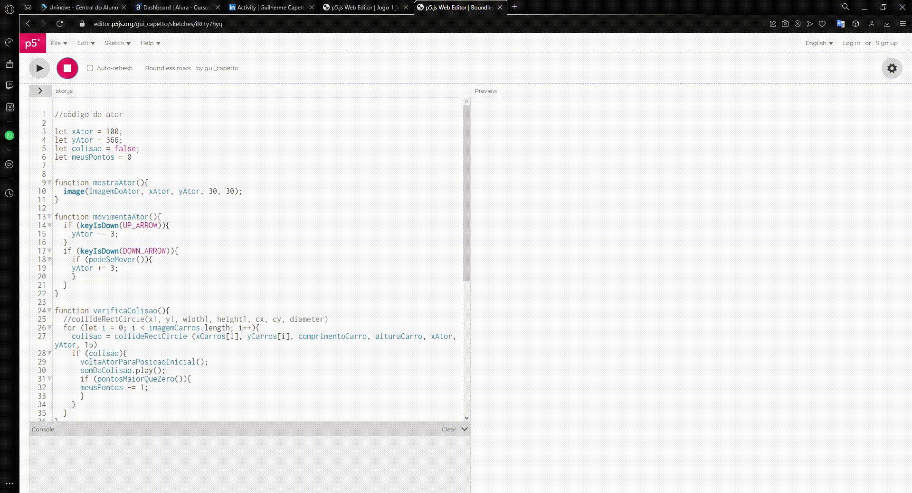

Projetos
Ao decorrer d meu caminho de estudos fiz alguns projetos que podem ser vistos em meu linkedin github.
Aqui estao alguns exemplos.

Neste exemplo esta um de meus projetos pessoais de automação de casa, começou como uma atividade em sala de aula.
Agora estou elaborando melhor para colocar em um ardoino.
Podem ver outros de meus projetos de C# em replit.
Logo em seguida outro projeto.
Um pequeno jogo em JavaScript para o começo de meu aprendizado, que consiste em atravessa a rua com alguns obstaculos.
Com esse jogo aprendi como o JavaScript funciona e comecei a elaborar melhor para a criação de sites.
ALURA
Com o aprendizado dos cursos da Alura consegui ter meus primeiros passos na area de tecnologia, foi la que comecei meu aprendizado.
Com o projeto Barbearia Alura pude entender como se faz um site do zero e atravez daquele ensinamento venho montando alguns sites que nao poderei divulgar por não estarem com dominio.